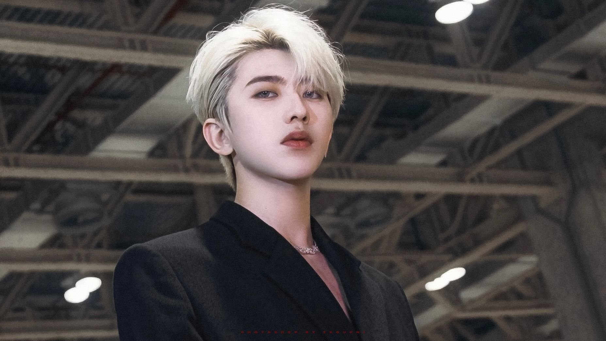

蔡徐坤
基本信息

求职意向：品牌代言人
联系电话：xxx-xxxx-xxxx
邮箱：xxx@163.com
蔡徐坤的微博
教育背景
- 1.小学：鹤翔学校
- 2.中学：南山区第二实验学校
- 3.高中：格雷斯布莱恩斯中学
专业技能
个人经历
经历
时间：2018年1月 到2021年4月
介绍：
- 偶像练习生c位出道
- 男团 NINEPERCENT 队长
- 中牙友好大使暨中牙杰出青年领袖人物
- Prada 代言人
- 戴尔比斯 代言人
- 青春有你 制作人代表
2.个人单曲/专辑
时间：2017年12月-2020年5月
歌曲介绍：
- 《情人》
- 《home》
- 《没有意外》
- 《蒙着眼》
- 《young》
- 《重生》
- 《wait wait wait》
- 《Bigger》
- 《pull up》
- 《hard to get》
- 《i wanna get love》
- 《you can be my girlfriend》
评价
专注于音乐创作、为人谦逊，热衷于慈善事业，把流量当成一种责任。